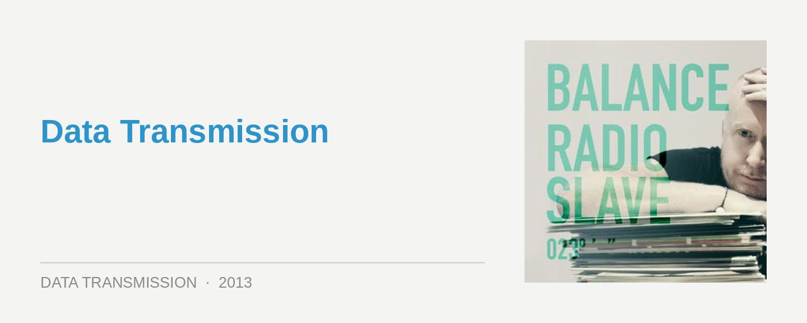

Radio Slave – Balance 023
Label: Balance Music Score: 7.5/10
Matt Edwards AKA Radio Slave was a natural choice to steer an installment of the Balance series, though he’s also one that might raise a few eyebrows. A true force in house and techno in recent years, and the face behind the Rekids label, his always excellent DJing has also proved divisive at times. Here he walks the tightrope between straight-up club excursions, and leftfield adventuring; and he’s definitely indulged his experimental tendencies a little on Balance 023.
Using the double-disc format as a chance to creatively stretch his legs, the first ‘White Skies’ mix sees him crafting a familiar stripped-back journey into clubland, while the second ‘Maestros & Memories’ mix sees him compiling an eclectic, unpredictable downtempo journey.
Each mix is bookended with a field recording made by Edwards, to reflect his own travelling to and from DJ gigs every weekend; it’s a clever approach that creates the right atmosphere, and offers a nice personal touch. Leaving Home… The Elevator Experience appropriately opens the club disc; it’s a prelude though for Edwards launching into a surge of stripped back minimalism, beginning in extremely techy fashion thanks to Stephan G & The Persuader Kaos.
Masterfully administered by Edwards, the driving pound of the four-four is joined intermittedly by melodies weaving in and out, ebbing and flowing with the pulse of the mix. These two elements are juggled masterfully via a seamless transition from Julien Perez’s pulsing Road to Dub, though to the gorgeous Makam mix of Delano Smith Partier. He’s keeping things deep hypnotic for the sublime first half of the mix.
The second half is where he dares to steer things leftfield, and the warped strings that puncture the pulsing kick in his remix of Pooley & Parker’s Lurchen Und Eulen signal he’s taking us down an adventurous route for the rest of the mix. Edwards’ natural inclination is to challenge, and we were never gonna get a straightforward club mix; but it’s all executed with a deft hand.
Early on in the second ‘Maestros & Memories’ mix, we get one of the ambient centrepieces from Vince Watson’s ambient Serence album, which Edwards released on his experimental Pyramids of Mars sub-label earlier this year; it wouldn’t be untoward to assume this is the groundwork he’s setting up for the remainder of the mix. However, Edwards doesn’t let the vibe hold still or settle into a groove at all, preferring instead to explore an eclectic, and often quirky collection of sounds; he’s more interested in giving us a peek into his private record collection in the fashion of one of the classic Back to Mine mixes.
There’s a number of sharp changes in emotion and tone, and for every piece of beautiful shimmering electronic music like Portico Quartet’s Laker Boo, there’s another offering that takes us completely of the realm of straightforward downtempo electronica. It’s a very clever look into his own personal tastes, revealing his natural affinity with experimental music.
Radio Slave’s Balance reveals the eclectic nature of both his musicality, as well as his musical tastes. It’s definitely one of the more tempered and restrained entries into the series; it’s likely to be enjoyed and respected by many, rather than one that is listened to on repeat. For what Radio Slave is trying to do though, you can’t fault the execution.